The SHAHANSHAH Encyclopedia
The Persian empire, 559 to 479 BCE
530 articles and 12 level histories, 2,703 painted sections: every battle, building, soldier, ship, ruler, people, place and royal order the game names, each part tagged by how we know it.
The History, level by level
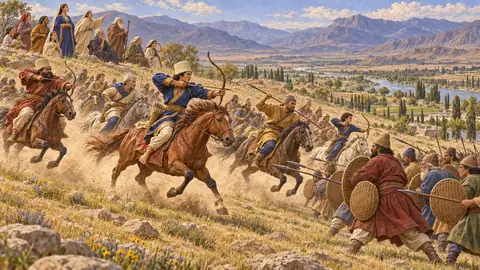
The Founder's TombLevel 1: The Founder's Tomb, Pasargadae, 530 BCE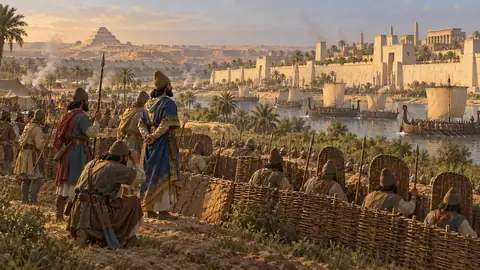
The Spear-bearerLevel 2: The Spear-bearer, Memphis, 525–524 BCE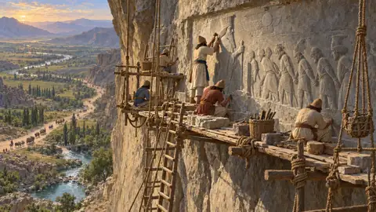
The LieLevel 3: The Lie, Bagastana, 521 BCE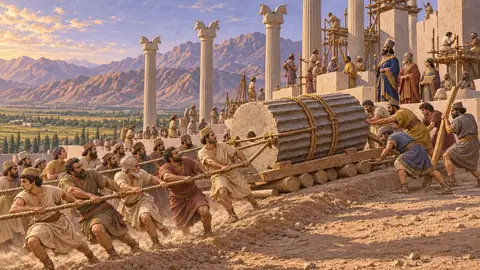
The TerraceLevel 4: The Terrace, Parsa, 521–509 BCE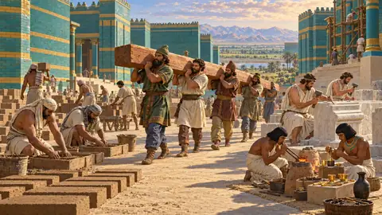
The CharterLevel 5: The Charter, Susa, 519–515 BCE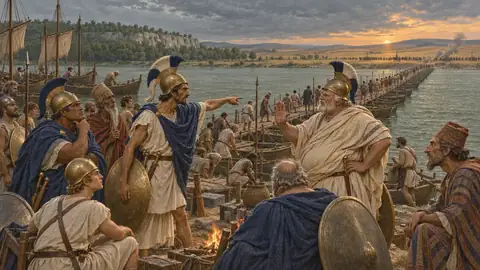
The Bridge of BoatsLevel 6: The Bridge of Boats, The Ister, 513 BCE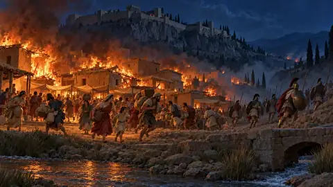
Sardis BurnsLevel 7: Sardis Burns, Sardis, 499–494 BCE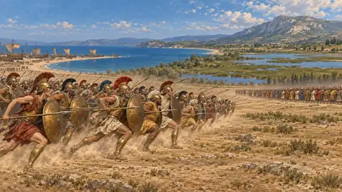
The Bay of MarathonLevel 8: The Bay of Marathon, Marathon, 490 BCE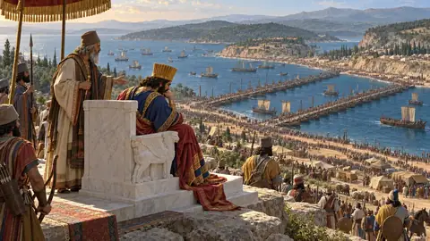
The CanalLevel 9: The Canal, Athos, 483–480 BCE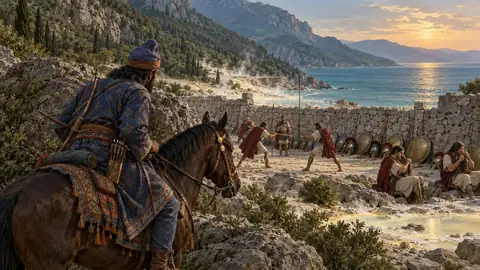
The Hot GatesLevel 10: The Hot Gates, Thermopylae, 480 BCE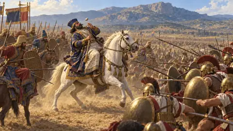
The FinaleLevel 11: The Finale, Plataea, 480–479 BCE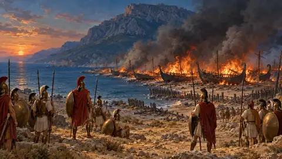
MycaleEpilogue: Mycale, Mycale and the Hellespont, 479 BCEBattles and events 64
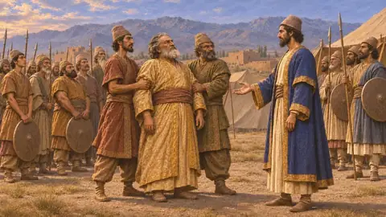
The revolt of Cyrus against the MedesPersian war that overthrew the Median king Astyages, about 553-550 BCE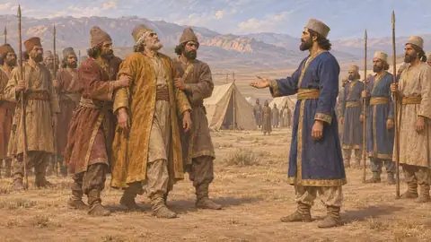
The battle of PasargadaeCyrus's victory over Astyages the Mede, probably near Pasargadae in Persis, about 550 BCE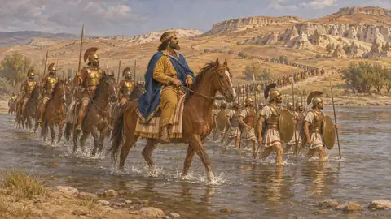
The fall of SardisCyrus's capture of the Lydian capital from Croesus, about 547-546 BCE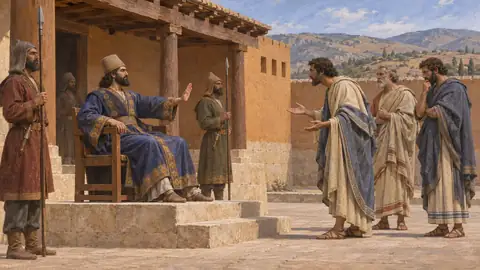
Harpagus's conquest of IoniaPersian campaign against the Greek cities of Asia Minor, about 546-545 BCE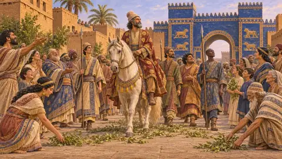
The fall of BabylonCyrus's capture of the Babylonian kingdom at Opis and Babylon, 539 BCE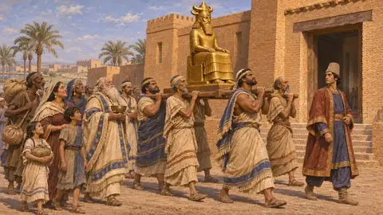
Cyrus's return of the exilesCyrus's restoration of gods and peoples after taking Babylon, 539-538 BCE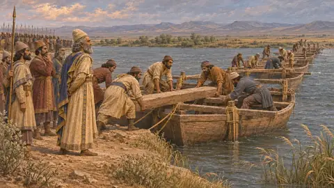
Cyrus's war with the MassagetaeCyrus's last campaign, against Queen Tomyris beyond the Araxes, about 530 BCE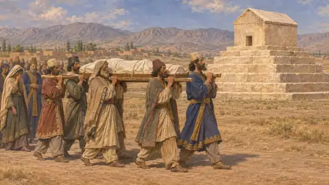
The burial of CyrusThe entombment of the founder of the empire at Pasargadae, Persis, about 530 BCE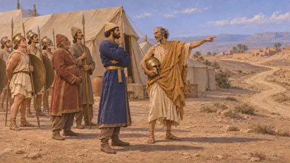
Cambyses' conquest of EgyptPersian invasion and conquest of Pharaoh's kingdom, Pelusium and Memphis, 525 BCE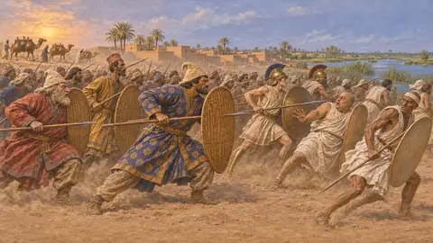
The battle of PelusiumCambyses' victory over Psamtik III on the eastern edge of the Nile Delta, 525 BCE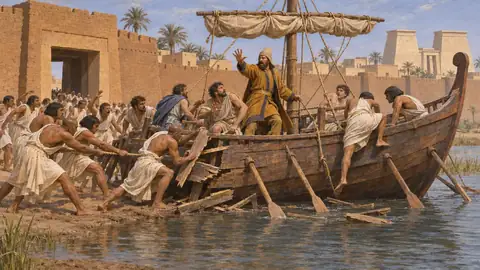
The siege of MemphisCambyses' siege and capture of Egypt's royal city after Pelusium, 525 BCE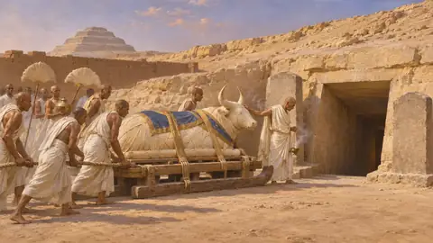
The death of the Apis bullDeath and burial of the sacred bull of Memphis, Cambyses' sixth year, 524 BCE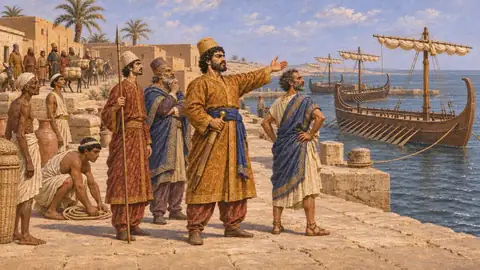
The abandoned expedition against CarthageCambyses' planned naval war on Carthage, called off after Egypt fell, about 525-524 BCE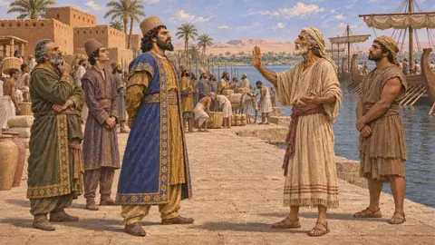
Cambyses' marches on Ammon and EthiopiaDesert and Nile campaigns of Cambyses beyond Egypt, probably about 524 BCE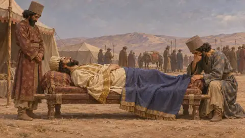
The death of CambysesThe King's death on the march home from Egypt, 522 BCE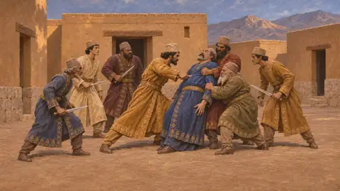
The killing of GaumataDarius and six nobles kill the reigning king at Sikayauvati in Media, 522 BCE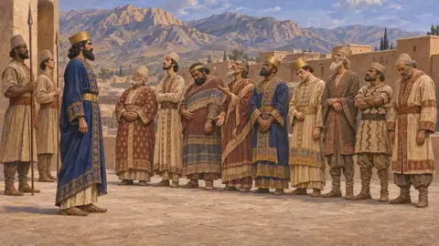
The revolts of 522-521Risings against Darius across the empire, autumn 522 to late 521 BCE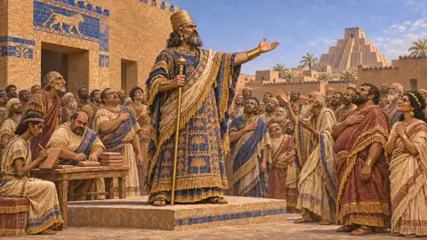
The revolt of Nidintu-BelA Babylonian rising under a royal name, crushed by Darius, Babylonia, 522 BCE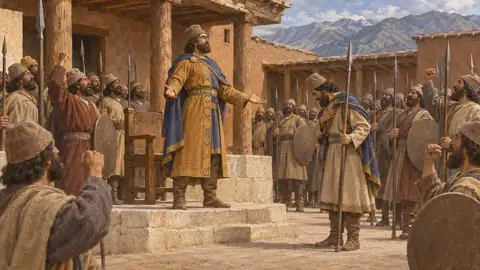
The revolt of FravartishMedian rising against Darius, spreading to Parthia, Hyrcania and Sagartia, 522-521 BCE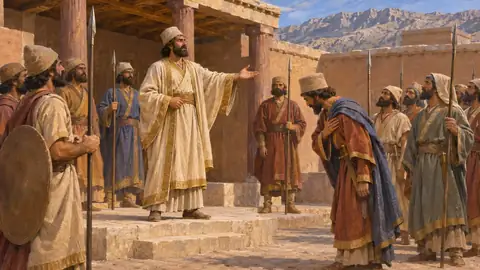
The revolt of VahyazdataA rising in Persis by a second claimant to the name of Bardiya, 522-521 BCE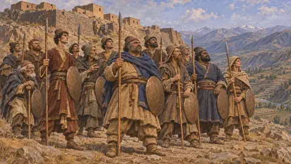
The war in ArmeniaDarius's generals against the Armenian rebels, Armenia and Assyria, 522-521 BCE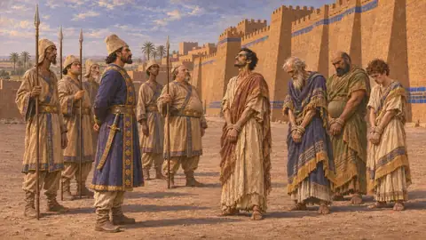
The revolt of ArakhaSecond Babylonian rising against Darius, Babylon, 521 BCE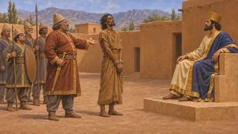
The third Elamite revoltRising of Elam under Athamaita, put down by Gobryas, about 520-519 BCE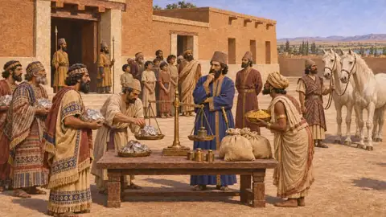
Darius's tribute assessmentDarius I's division of the empire into tribute districts, about 518 BCE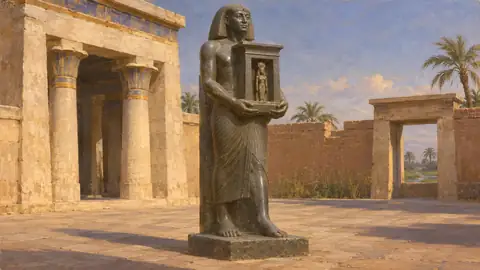
Darius's restoration of the House of Life at SaisRoyal order to revive the House of Life, probably at Sais in Egypt, about 519-518 BCE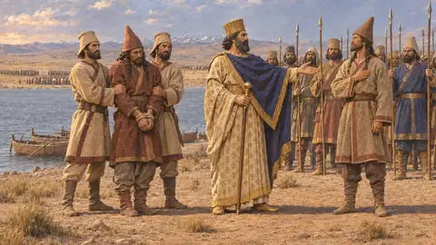
Darius's campaign against SkunkhaDarius's war on the pointed-cap Saka of Central Asia, about 519 BCE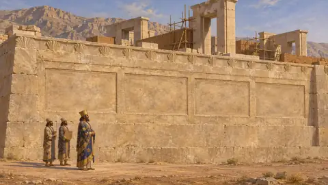
The building of the terrace of ParsaDarius I's palace platform at Parsa (Persepolis) in Persis, begun about 518 BCE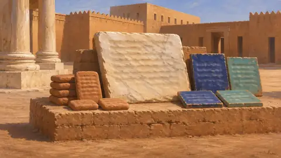
Darius's Susa charterDarius I's building inscription for his palace at Susa, probably late 6th century BCE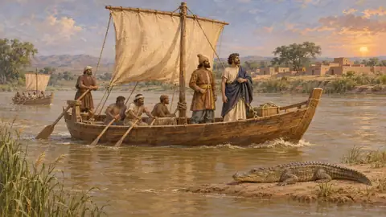
The voyage of ScylaxA Persian voyage of exploration down the Indus and west to Egypt, about 517 BCE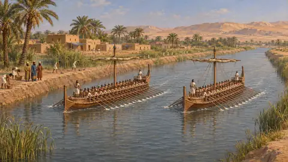
Darius's canal from the Nile to the Red SeaCanal from the Nile to the Gulf of Suez, Egypt, under Darius I, about 500 BCE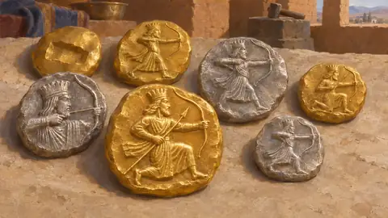
The striking of the daricThe first royal Persian coinage in gold and silver, probably at Sardis, about 510-500 BCE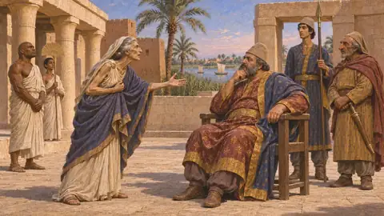
The siege of BarcaPersian siege of a Greek city in Cyrenaica, Libya, about 513 BCE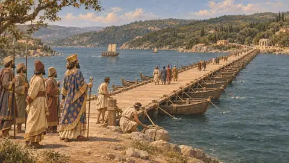
The bridging of the BosporusDarius's bridge of boats between Asia and Europe, about 513 BCE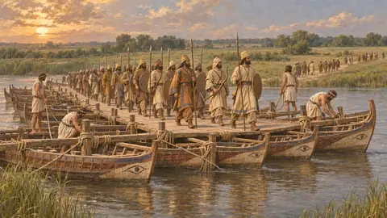
Darius's Scythian campaignDarius's march across the Bosporus and the Ister against the Scythians, about 513 BCE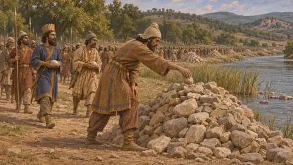
The defeat of the GetaeDarius's conquest of a Thracian people on the march to the Ister, about 513 BCE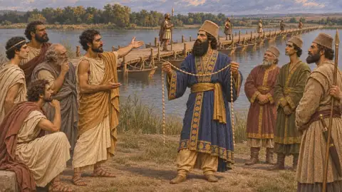
The debate at the Ister bridgeCouncil of Greek tyrants at the Danube bridge, Scythian campaign, about 513 BCE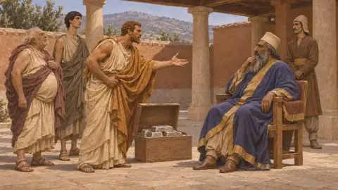
The siege of NaxosFailed Persian and Milesian attack on the island of Naxos, 499 BCE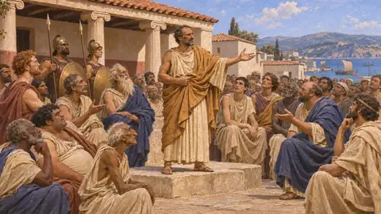
The Ionian RevoltRising of the Greek cities of Asia Minor against Darius, about 499-494 BCEThe burning of SardisIonian and Athenian raid on the Lydian satrapal capital, 498 BCEThe battle of EphesusPersian victory over the Ionians and their allies near Ephesus, Ionia, 498 BCEThe revolt of CyprusRising of the Cypriot kingdoms against Darius during the Ionian Revolt, 498-497 BCEThe battle of LadeSea battle off Miletus that broke the Ionian Revolt, 494 BCEThe fall of MiletusPersian capture of the leading city of the Ionian Revolt, Ionia, 494 BCEMardonius's expedition and the wreck off AthosPersian campaign into Thrace and Macedonia, with a fleet wrecked off Mount Athos, 492 BCEThe expedition of Datis and ArtaphernesDarius's seaborne campaign against Eretria and Athens across the Aegean, 490 BCEThe fall of EretriaPersian siege and capture of the Euboean city of Eretria, 490 BCEThe battle of MarathonAthenians and Plataeans against a Persian army, Attica, 490 BCEThe digging of the Athos canalXerxes' ship canal across the isthmus behind Mount Athos, about 483-480 BCEXerxes' bridges over the HellespontTwo bridges of boats from Abydos to Europe, built for the invasion of Greece, 481-480 BCEThe crossing of the HellespontXerxes' army passes from Asia into Europe near Abydos, 480 BCEXerxes' invasion of GreecePersian campaign by land and sea against the Greek mainland, 480-479 BCEThe review at DoriscusXerxes' count and inspection of his army and fleet in Thrace, 480 BCEThe storm off MagnesiaStorm that wrecked part of Xerxes' fleet on the Magnesian coast, Thessaly, 480 BCEThe battle of ThermopylaeBattle between Xerxes' army and the Greeks in the pass of Thermopylae, 480 BCEThe battle of ArtemisiumSea battle off northern Euboea between Xerxes' fleet and the Greeks, 480 BCEThe Persian capture of AthensXerxes' taking and burning of Athens and its Acropolis, late summer 480 BCEThe battle of SalamisSea battle in the strait between Salamis and Attica, 480 BCEXerxes' return to AsiaThe King's withdrawal from Greece to Sardis after the defeat at Salamis, autumn 480 BCEAlexander of Macedon's embassy to AthensA Persian peace offer carried to Athens by the king of Macedon, 479 BCEMardonius's capture of AthensSecond Persian occupation and burning of Athens, summer 479 BCEThe death of MasistiusCavalry fight below Mount Cithaeron, near Erythrae in Boeotia, 479 BCEThe battle of PlataeaGreek victory over Mardonius's army near Plataea in Boeotia, 479 BCEThe battle of MycaleGreek landing against a Persian camp on the Ionian coast opposite Samos, 479 BCEThe siege of SestosAthenian siege of the Persian stronghold on the Hellespont, 479-478 BCE